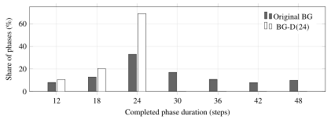

Broadcast-Gain and service deadlines
An agent at a red light reports that it is waiting. Under the original controller, that report can delay the next switch from 24 to 48 steps. The more reliably reports arrive, the longer it waits.
Broadcast-Gain (BG) coordinates agents at a shared junction using small demand reports. Its deadline variant, BG-D, fixes the fallback, but a tuned timer still wins the main workload.
{% include paper-link.html %}The timer also has the highest throughput: 683.6 crossings per 1,000 steps, versus 682.8 for BG-D(24) and 678.9 for original BG.
Main workload: 140 agents, 70% report loss, reports every six steps and two-step clearance. The reduction has a paired 95% interval.
Opposite approaches form an axis: north-south or east-west. One axis gets green at the shared crossing, called the gate. Switching closes both axes briefly; this is clearance.
The original controller has two timing branches. With no cached reports, it switches after four reporting cycles. With a nonempty cache, it can hold for eight cycles while waiting for an evidence test to pass.
One stationary agent keeps this cache alive under reliable delivery. Its report identifies the waiting axis, yet one sender cannot supply enough effective support for a switch. The short fallback disappears before the report can cause service.
The single sender isolates the bug. In busy traffic, the same branch holds phases with many reports whose combined evidence is inconclusive. A patch limited to weak caches saves only 0.7 waiting steps [0.2, 1.2], against 8.5 for the unconditional deadline.
The curve evaluates this one-sender case exactly. More reliable delivery keeps the cache alive for longer, removing opportunities to use the early fallback.
Probability of each original switch time
With one sender, the cache is empty when the current and previous reporting attempts are both lost. Let \(f_n(q)\) be the probability that \(n\) independent attempts contain no adjacent losses, with delivery probability \(q\):
Here \(C\) is the reporting interval. Turning a loss into a delivery can only remove an early fallback opportunity, so expected switch time is nondecreasing in \(q\).
BG-D assigns each phase a deadline in physical time. Evidence is updated at report boundaries, but the deadline is checked at every environment step. The controller switches when the deadline arrives or the evidence qualifies for an earlier change.
The 24-step deadline matches the original no-report fallback, so this comparison isolates the timing rule. Reports can no longer disable it; the payload, cache handling and evidence thresholds stay the same.
Let \(t_0\) be the phase start, \(H\) its deadline duration and \(E(t)\) the eligible evidence event. The next switch occurs at:
Every report pattern therefore returns an axis to green within \(H+c\) steps, where \(c\) is clearance and \(H>c\). With \(H=24\) and \(c=2\), that is 26 steps. This bounds uninterrupted loss of green; an agent can still wait behind a queue.
Agents near the gate send a signed waiting-progress residual in one byte, then their axis and distance in a second. Sender identity and sequence number are transport fields outside this payload. Old reports lose weight and expire after two reporting cycles.
In full Broadcast-Gain, agents broadcast demand reports and those reports also provide a small gain to a learned movement policy. A policy trained with proximal policy optimization (PPO) chooses move or wait. After training, the gain increases its score for moving near an open gate; the network weights stay fixed.
The scheduler decides which axis gets green. We use greedy legal movement for the timing comparisons, then test learned movement separately. With stochastic PPO, report-conditioned gain lowers p95 waiting from 183.1 to 180.0 steps; a fixed movement bias reaches 179.3. The gain-versus-bias difference is +0.7 steps [−0.3, 1.7].
Starting controller: paper Section 2 ↗ · Learned movement: Appendix A.3 ↗ · Gain controls: Table 6 ↗
Write report age as \(\Delta t_j\), so freshness is \(\eta_j=e^{-\Delta t_j/C}\). With decoded residual \(\widehat x_j\), reported distance \(d_j\), and sender axis \(s_j\), the demand score and effective support are:
The normalized advantage \(A_S\) is less than one. The original evidence test \(uA_S>0.12+0.20(1-u)\) therefore requires \(u>4/15\), or \(n_{\mathrm{eff}}>32/15\). That is necessary, not sufficient. One or two effective reports cannot pass it.
In the main workload, BG-D(24) lowers p95 waiting from 173.4 to 164.9 steps. Fixed 12 is better at 156.8, and also has higher throughput.
The phase traces show where the timing changes. Original BG keeps 46.0% of phases open beyond its shorter fallback. With a 24-step deadline, zero phases can exceed that duration by construction. Evidence still triggers 31.0% of BG-D's switches before the deadline.

Paper Figure 2. Completed phase durations in the main workload, including clearance. The cutoff at 24 steps is the deadline guarantee.
View figure ↗Packet-pressure is the report-based baseline: it switches using the difference between the two axes' received demand scores, with fixed hold times and a fixed threshold.
| Controller | p95 waiting | Throughput | Difference vs Fixed 12 |
|---|---|---|---|
| Fixed 12 / BG-D(12) | 156.8 | 683.6 | Reference |
| Fixed 24 | 184.6 | 653.8 | +27.8 [26.5, 29.1] |
| Packet-pressure | 171.2 | 682.1 | +14.4 [12.4, 16.3] |
| Original BG | 173.4 | 678.9 | +16.6 [15.5, 17.7] |
| Weak-cache patch | 172.7 | 679.3 | +15.9 [14.9, 16.9] |
| BG-D(24) | 164.9 | 682.8 | +8.1 [6.7, 9.4] |
BG-D(24) still adds 8.1 waiting steps [6.7, 9.4] relative to the separately selected 12-step timer. At this reporting interval, BG-D(12) is exactly that timer because its minimum evidence-triggered hold is at least 12 steps.
Controller comparison: paper Table 1 ↗ · Phase diagnostics: Table 3 ↗
Under persistent 90:10 demand, the 24-step cap increases p95 waiting from 214.5 to 263.7 steps: a penalty of 49.2 [45.6, 53.6] with a paired 95% interval. Throughput falls from 632.0 to 546.2 crossings per 1,000 steps. More frequent returns to the quiet axis reduce capacity for the dominant queue.
This test reports aggregate waiting. It supplies neither a per-axis waiting breakdown nor a longer-deadline comparison, so it does not show how much the bound helps the 10% axis or whether a larger deadline recovers the lost capacity.
Clearance changes the ranking too. With six steps closed at every switch, Fixed 12 spends half its phase clearing; its p95 reaches 280.4, compared with 181.6 for Fixed 24. BG-D(24) reaches 192.7, still 11.1 steps [9.0, 13.3] behind the longer timer.
Across these eight settings, Fixed 12 has the lowest reported p95 in five; BG-D(24) in one. BG-D(24) improves on original BG in seven of eight.
Table 5 reports point estimates without intervals for each workload. In particular, the 1.6-step lead at 50:50 has no reported interval.
| Workload | Fixed 12 | Fixed 24 | Original BG | BG-D(24) |
|---|---|---|---|---|
| Main workload | 156.8 | 184.6 | 173.4 | 164.9 |
| Steady 50:50 demand | 143.5 | 164.7 | 149.8 | 141.9 |
| Steady 90:10 demand | 307.2 | 283.0 | 214.5 | 263.7 |
| 64-step alternation | 171.6 | 203.7 | 190.2 | 178.4 |
| One-step clearance | 139.7 | 167.8 | 154.6 | 146.8 |
| Six-step clearance | 280.4 | 181.6 | 202.3 | 192.7 |
| 80 agents | 77.6 | 91.4 | 96.3 | 82.9 |
| 180 agents | 211.6 | 244.8 | 237.9 | 222.4 |
With 60% and 80% report loss on the two axes, BG-D(24) narrows the p95 gap from 37.3 to 17.8 steps. Fixed 12 has an exact zero paired channel gap in this test, since its schedule ignores reports. The deadline reduces the channel bias in BG but leaves evidence-triggered switches sensitive to delivery quality.
| Controller | Lower-loss axis | Higher-loss axis | Gap |
|---|---|---|---|
| Fixed 12 / BG-D(12) | 156.8 | 156.8 | 0.0 (exact) |
| Original BG | 166.1 | 203.4 | 37.3 [34.7, 39.9] |
| BG-D(24) | 160.8 | 178.6 | 17.8 [15.3, 20.5] |
Each condition uses 20 blocks of four realizations. Reported p95 is the mean of realization-level quantiles, not a pooled percentile. Intervals use paired bootstrap resampling of blocks. Waiting subtracts the 48-step free-flow traversal from each visit's ready-to-completion time.
In the unequal-channel test, loss labels are exchanged within each paired realization. A timer's trajectory is independent of those labels, so its paired axis means match exactly. Controller settings are selected on separate development workloads and held fixed in the reported tests.
Unequal channels: paper Table 4 ↗ · Workload sensitivity: Table 5 ↗
The bound limits how long an axis loses green. An agent can still wait behind a queue; it is not a bound on individual waiting time. The 90:10 result shows the capacity cost of enforcing frequent service returns.
The tests cover one fixed-route junction with a reliable phase-status interface. Road networks, downstream spillback, report transport delay and status-interface failures are not evaluated. The movement task has no energy or risk penalty for a legal move, which favors the greedy movement baseline.
Fix the longest acceptable interruption of service before tuning throughput. Then compare schedules that meet that bound, recording the waiting distribution on each axis. Under sustained 90:10 demand, those measurements would reveal what the service promise buys the quiet queue and costs the busy one.